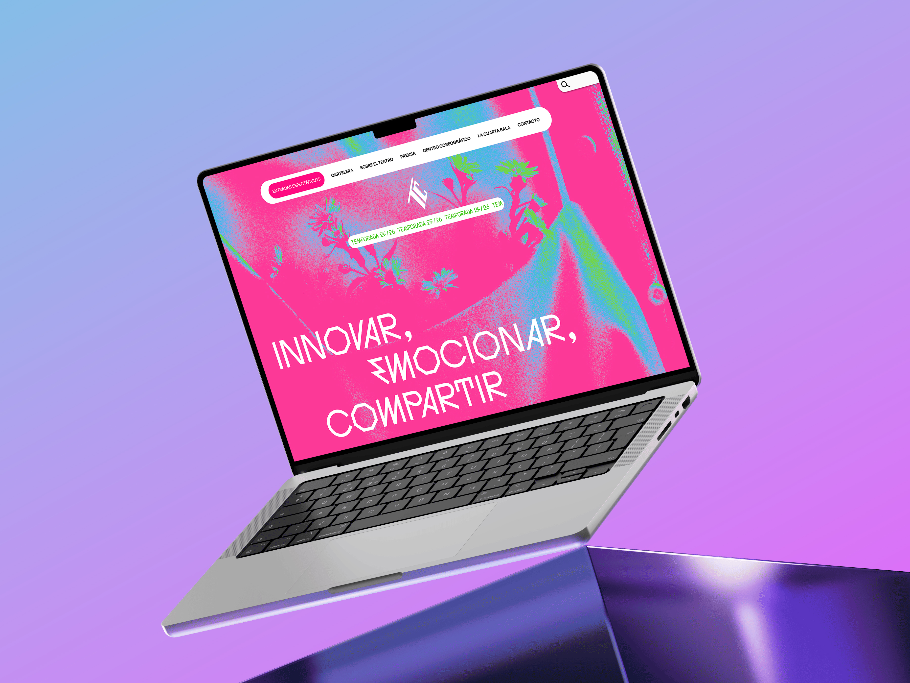

Editorial
Eterno Retorno
Propuesta de diseño editorial que explora la naturaleza cíclica del tiempo a través del diseño tipográfico y la imagen.
Ver más
Motion graphics
Memories
Exploración visual sobre la persistencia y transformación de la memoria a través del motion graphics.
Ver más
Editorial
Nudo
Un proyecto que examina las complejidades de las relaciones humanas a través de una narrativa visual.
Ver más
Visual identity
Teatros Del canal
Rediseño de identidad visual para Teatros del Canal, capturando la esencia cultural del espacio escénico madrileño.
Ver más